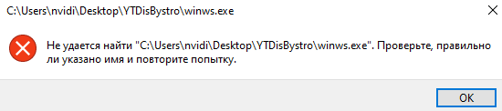

Уже дней 10 не получается настроить GoodbyeDPI таким образом, чтобы работал дискорд вместе с ютубом, постоянно приходится переключаться между 2-мя разными конфигурациями программы. Они отличаются по своей сути только флагом --wrong-seq, указывая который, перестаёт работать ютуб, зато начинает грузиться дискорд. Мой провайдер Ростелеком, пожалуйста, помогите разобраться с этой проблемой 

 .
.
Если я использую следующую конфигурацию для службы, то работает только дискорд:
-p -q -s -m -w -f 1 -e 1 --wrong-chksum --wrong-seq --reverse-frag --blacklist "%CD%\russia-blacklist.txt" --blacklist "%CD%\russia-youtube.txt"" start= “auto”
Если же я использую другую конфигурацию для службы, то работает только ютуб:
-p -q -s -m -w --fake-from-hex 1603030135010001310303424143facf5c983ac8ff20b819cfd634cbf5143c0005b2b8b142a6cd335012c220008969b6b387683dedb4114d466ca90be3212b2bde0c4f56261a9801 --fake-gen 5 --fake-resend 5 --auto-ttl --wrong-chksum --blacklist "%CD%\russia-blacklist.txt" --blacklist "%CD%\russia-youtube.txt"" start= “auto”
Домены в файле russia-youtube.txt у меня следующие:
youtube.com
youtu.be
yt.be
googlevideo.com
ytimg.com
ggpht.com
gvt1.com
youtube-nocookie.com
youtube-ui.l.google.com
youtubeembeddedplayer.googleapis.com
youtube.googleapis.com
youtubei.googleapis.com
yt-video-upload.l.google.com
wide-youtube.l.google.com
discord-attachments-uploads-prd.storage.googleapis.com
dis.gd
discord.co
discord.com
discord.design
discord.dev
discord.gg
discord.gift
discord.gifts
discord.media
discord.new
discord.store
discord.tools
discordapp.com
discordapp.net
discordmerch.com
discordpartygames.com
discord-activities.com
discordactivities.com
discordsays.com
discordstatus.com
airhorn.solutions
discordapp.io
discordcdn.com
discordsez.com
Используйте Zapret а не GoodbyeDPI.
Запрет намного эффективнее и намного более гибкая настройка вроде-как.
Уже давно не использую гудбай.
Плюсую, теперь уже давно не танцую с бубном, перебирая всякие настройки
Ну или как вариант - можете воспользоваться какой-либо автоподбиралкой конфигов для гудбая если не используете запрет уж.
Спасибо за совет, как раз хотел попробовать на своём устройстве, но как быть в случае, если необходимо поднять обход так на чужом пк, где на запрет почему-то ругается антивирус, а админ не разрешает оффнуть антивирус? )))
Пробовал, даже сам писал такую, только а смысл, если всё упирается в один параметр (wrong-seq)
Ну добавьте в исключения антивируса файлы программы, можно и не выключать антивирус прям совсем.
Лишь бы по шее мне только за это не прилетело, спасибо за совет)
У меня ведь не у одного антивирус ругается на запрет, знает кто причину?
Кстати, я даже пробовал сразу 2 GoodbyeDPI параллельно запустить, фиг…
Ну, смотря какой у вас антивирус. У меня не ругается.
Встроенный, от винды
Можно запустить два гудбая, по крайней мере в службах, но нужно дать им разные названия.
Что касается запрета - на оригинальный бандл антивирус вроде как не ругается
А что пишет? Можете скинуть там скрин ну или как-то что-бы было понятно, что у вас там происходит?
Запрет вообще откуда скачивали?
Я так и запускал (в разные каталоги раскидывал и переименовывал в батнике службы), но проблема в том, что сколько бы программ не было запущено --wrong-seq какого-то фига распространяется на все экземпляры (у него приоритет какой-то что-ли, или он вообще на весь трафик действует, я хз)
Ух там дофига всякого, может я не оттуда качаю хз, вот: https://github.com/bol-van/zapret/releases, это ведь оригинал ???
Может вы используете одинаковые списки доменов? Если домены пересикаются, то логично что будет и туда и туда кидать флаг
похоже)))
Ну вроде-как оригинал, но попробуйте такую версию - Releases · Flowseal/zapret-discord-youtube · GitHub
У меня на такую не ругается по крайней мере.
сейчас попробую ваш совет, хах)
Что из содержимого в архиве запускать нужно?
Все батники, где написано general вообщем. (Там таких много, так-как в них разные конфигурации стратегий обхода, какие-то могут работать лучше, какие-то хуже, смотрите сами).
Остальное можно в принципе не трогать. Запускайте только от имени админа.
*Само собой один батник за раз запускайте и проверяйте. По идее должно работать на ALT или ALT2 например, но смотрите уж.
Запускать все, или только те которые будут работать?
Вроде как только один из антивирусов ругается, но его мне можно трогать, я на своём устройстве попробую эту версию (позже)
Запускайте один какой-нибудь, и проверяйте, работают-ли дискорд, ютуб и всё что нужно.
Сайты добавлять в файл list-general
Если нужно ментьше батников и без вирусов )
Пользуюсь уже несколько месяцев, никаких вирусов не заметил, проверял за это время всё что можно от пяток до ушей.
вот это уже лучше намного, ни один не ругается, спасибо
На 59 секунде просто перестаёт грузить видео
Попробуйте другой батник. Ещё можете включить QUIC в браузере попробовать если выключен.
*DNS Over HTTPS тоже включите на всякий случай, если отключено, у меня просто так настроено и всё работает стабильно.
Много раз обсуждалось уже
Я использую хром, не совсем понятно где находиться этот QUIC и DNS
Все ответы в теме по ссылке
Я знаю, что их там нет. Но Защитник думает иначе. Да и старье это. Лучше уж тогда это использовать
DNS
В настройках во вкладке конфиденциальность и безопасность выберите безопасность и там будет у вас
Использовать безопасный DNS-сервер.
Его включите, выберите Cloudflare.
{kind=link}
Дальше в адресной строке браузера введите chrome://flags/
В поисковой строке появившейся, где будет написано SEARCH FLAGS напишите QUIC
Будет у вас там вот такой пункт:
Если там стоит DISABLED или DEFAULT то переключите на Enabled.
{kind=link}
После этого перезапустите браузер.
Ну как говорится, работает - не трогай. У меня пока-что работает. Зачем на другой переходить?
Сделал все как вы сказали, ничего не помогло, перебрал все батники
Хотя бы потому, что (смотри пост выше этого)
А хотите еще поперебирать? Вам сюда Может, после 15-20-го озарение придет, что решение на этом же форуме лежит, под носом.
не знаю, кто ты, но ты гений, спасибо тебе большое, ты сделал мой день!
твой вариант тоже хорош в качестве альтернативы, спасибо
моя проблема решилась.
На здоровье. Интересно, альтернативы чему? )
более привычному для меня гудбаю

Можно кратко объяснить?
Можно. ZDY не работает, послал его другие батники перебирать, там их на 2 порядка больше )
Ну… Я не знаю, я всё по своему чисто опыту говорю, и как делал я. Возможно я тупой конечно, но всё-равно рад, что ваша проблема решилась. DNS кстати советую оставить, полезная штука вообще.
Я тоже.
А, понял, проблема количества сообщений - 2 юзера один человек. Новички, блин ))
Ну, тут видимо зависит от провайдера не знаю. У меня на ура он рабоатет и надеюсь будет работать.
Не хочется вас огорчать, но zapret v68 давно устарел, причем кардинально. Но вы надейтесь, надейтесь…
Ты мне дал ссылку на рабочую программу?
Про какую из 2-х ссылок речь?
Вот эту
Хрен знает, у меня желания сидеть батники перебирать никогда не возникало, если есть рабочее решение с 1 батником
Дайте мне просто рабочее решение
Я уже дал, инструкция в шапке, ответы на проблему 59-й секунды - в теме.
Может секунде?
Ну да, ей самой. Да, если вдруг дискорд немножко забарахлит - ответ ближе к концу темы.

Инструкция - в шапке (первое сообщение темы). По шагам
85 конфигов  офигеть. с этой штукой и гудчек не нужен)
офигеть. с этой штукой и гудчек не нужен)
Чем бы дитя не тешилось…  Это чтобы перебиральщики батников точно кончили на 85-м. Или 80-м ))
Это чтобы перебиральщики батников точно кончили на 85-м. Или 80-м ))
Причем от стратегий внутри идет кровь из глаз и хочется скорее это развидеть
Что не так со стратегиями? Даже скачал прозапас, вдруг рил перестанет работать мой текущий конфиг).
Удачи )
Не ну вы хотите сказать что это всё мусор нерабочий? Или что там не так то?
Скажем так - мусор полурабочий. так как некоторые полный мусор, но какие-то может и сработают
Как оказалось, для личного пользования - это, пока что наверное, наилучший обход на пк из всех существующих - для тех, кто не любит мазохизм с батниками, стратегиями и тд…
Хотелось поинтересоваться - а есть ли какой-то вариант, чтобы можно было отправлять файлы через Дискорд?
Если в РФ это работает по умолчанию с помощью Запрета, то вот в ДНР (и на остальных территориях, на которых фича с прикреплением файлов была заблочена задолго до блокировки Дискорда РКНом) не работает.
Пробовала разные IP записывать в файл hosts перед discord-attachments-uploads-prd.storage.googleapis.com (так как ошибки в коде странице указывают на него) или его вариациями, пару раз работало, но потом никакой IP не работал.
Приходится в Хроме открывать вкладку Дискорда с включенным прокси, чтобы прикрепить картинку. Ну или ссылкой.
Хотелось бы, конечно, чтобы это можно было делать без прогона через прокси и в приложении, а не браузере, но это возможно, полагаю? 
Надо смотреть не блокнут ли url который отвечает за прикрепление файлов по айпи в днр. Если да, запрет тут не поможет
Я понимаю, что этот вопрос покажется глупым, но как именно это сделать?
прогони блокчек, там на старте идет ip блок тест
либо можно сделать tracert discord-attachments-uploads-prd.storage.googleapis.com, в командной строке, если пинг теряется дальше тспу , то вероятно заблокирован по айпи
на этом сервере включен icmp, должен пинговаться
Тут целая куча айпишников, что-то я сомневаюсь, что вы их все перепробовали
Если мы говорим о файле hosts, то поверьте, очень много из этих айпи я прогнала, но ничего. Когда-то давненько общалась с поддержкой дискорда, высылала им скриншоты ошибок в браузере, они говорили, что с их стороны блока нет. А так как это именно на всех новых территориях стало до РФ еще банится, мне стало интересно.
Да, о нем мы и говорим. Но я бы все-таки проверил IP из подсетей не совпадающих с выдаваемыми крупными DNS. Простым пингом, это недолго. Если все ответы потеряются - вывод понятен, а если нет - добавляем в хостс, в командной строке от админа айпиконфиг /флушднс и проверяем загрузку
Прошу прощения, но все, что касается таких операций - я в этом совсем несильна.
Я знаю, как сделать то, что вы описали в последнем предложении, но вот как и что именно сделать все остальное (в каком виде это прописать и где) - я не в курсе.
Это все тоже делается через командную строку? Просто я знаю, как пинговать домен через нее, но как проверить IP - нет(
Да, через командную строку. Командой ping 74.125.127.207 например (это 1 из IP нужного нам сайта)
Если все 4 пакета потеряются - значит этот IP нам не подходит.
Если все 4 пройдут - добавляем в hosts строчку
Спойлер
74.125.127.207 discord-attachments-uploads-prd.storage.googleapis.com
сохраняем
В командной строке от админа (это важно!) выполняем ipconfig /flushdns
Запускаем дискорд и пробуем загрузку
А вот где сей списочек можно найти? Потому что прошлые, которые вы предлагали, мне кидали, а это как загуглить я даже не знаю…
По ссылке выше. Переходите, кнопку Search нажимаете и получаете список IP
Так я так и сделала, когда вы ссылку предоставили в первый раз  Мне казалось, что это от меня и требовалось.
Мне казалось, что это от меня и требовалось.
И до этого я пробовала схожие айпи (мне их списком присылал Ori), но ничего не помогало. Причем всегда все пропускаются в командной строке, но результатов ноль.
Мне кажется, что тут безнадежно - буду тогда продолжать оставаться на прокси. Из-за Ютуба и 0:59 секунд все равно приходится гуглайпис проксировать, заодно вот и Дискорд подхватывает.
И в чем цимес лезть из приложения в браузер, потому что там прокси есть?
Не проще подобрать IP и пользоваться нормально в приложении?
Да, долго… ну а кому сейчас легко?
Ори вам их прямо все прислал? Я там как минимум с 10-к подсетей вижу, а IP конкретных еще больше
Ну похожие присылал списком в письме, да.
Я подбирала и подбирала (уже некоторое время), но в приложении ничего не помогает.
В приложении я отправляю ссылками картинки, а если уж надо прям файл (что бывает редко), то делаю один клик, где в панеле в закладках дискорд висит, и там другу прикрепляю файл.